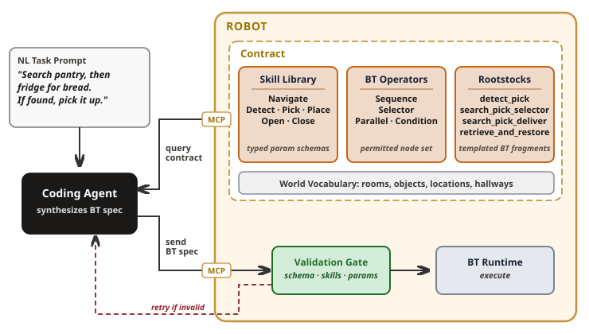
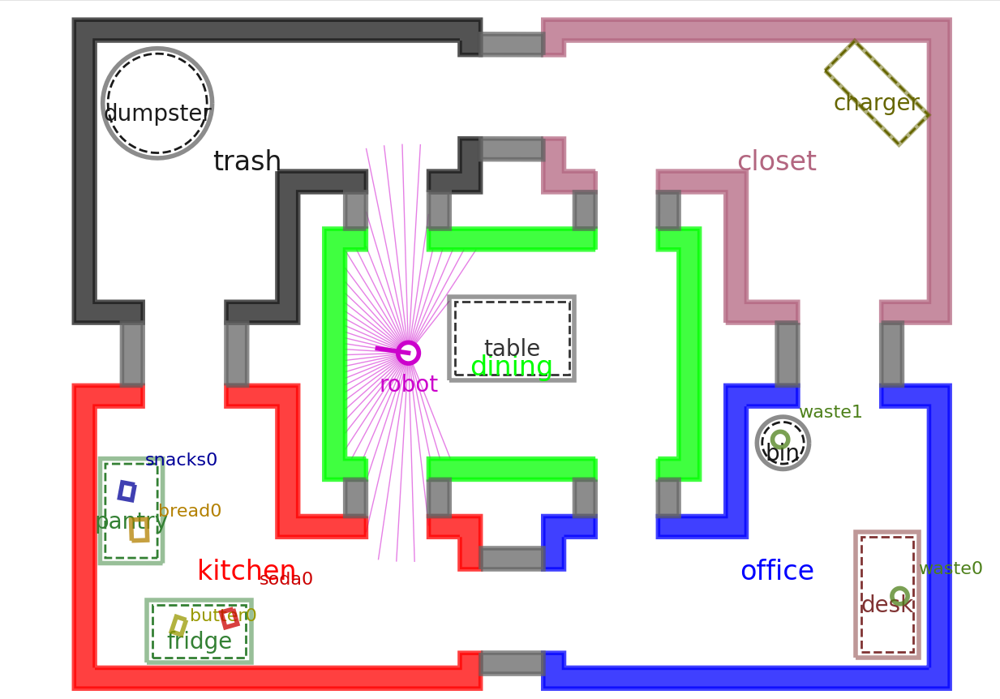

Contract-Grounded Behavior Tree Synthesis
Anonymous Institution
Abstract
Synthesizing deployable behavior trees (BTs) to control robots from natural language (NL) requires grounding to ensure every generated BT references only skills a robot can actually execute. Existing LLM-based BT synthesis approaches often place this grounding responsibility on a robot operator. This makes deployment brittle when an operator does not know which skills the robot can execute, how those skills are parameterized, or how the robot runtime software constrains valid BT structure. This paper proposes a contract-grounded BT synthesis architecture in which a coding agent queries a robot-side Model Context Protocol (MCP) server to retrieve an explicit contract consisting of a skill library, permitted BT operators, and optional BT composition templates, before synthesizing a BT for validation and execution. Non-expert operators therefore issue NL commands without knowledge of robot implementation details. We evaluate two LLMs, a closed model (Sonnet 5) and a smaller open-source model (Gemma4:31b), across 155 simulated tasks in PyRoboSim and 14 tasks on a physical Husarion Panther robot, with ten repetitions per task, and we compare against a hybrid symbolic-LLM baseline under correct, stale, and incomplete symbolic world models. Results show that the contract is sufficient to synthesize valid BTs and achieve high task success, that composition templates recover 16 to 26 points of success for both LLMs, and that the hybrid baseline, strong when its world model is correct, solves none of the twenty tasks whose world model is stale or incomplete. The architecture transfers to physical hardware running a Nav2 stack opaque to both operator and agent.
Method
A coding agent queries a robot-side MCP server for a machine-readable contract, synthesizes a BT, and submits it for validation before execution. The robot runtime keeps authority over skill implementation, BT instantiation, and execution.

Methods compared
𝒞
Full contract · our method
The agent queries the whole contract 𝒞 = (𝒦, 𝒪, ℛ): skill library, permitted BT operators, and rootstock templates.
𝒞∖ℛ
Contract without rootstocks · ablation
The same interface, exposing only (𝒦, 𝒪). Isolates what the reusable composition templates contribute.
LLM-OBTEA
Hybrid symbolic–LLM baseline
An LLM maps the instruction to a first-order-logic goal, and an optimal backward-chaining expansion compiles the BT. It is given the object locations, which it cannot plan without.
On Core60, Lang50 and Hard15, 𝒞 and 𝒞∖ℛ receive only the world vocabulary: entity names, with no placements. LLM-OBTEA receives the object–location relationships. Prior30 is built to test that dependence.
MCP Interface
The agent reaches the robot only through these MCP tools. It has no access to backend source code, low-level robot APIs, ROS nodes or execution internals. Tool names are as served by the robot, with the name used in the paper beneath each.
Loading…
Experimental Setup
The evaluation asks and answers four questions:
- Q1:Contract grounding. Does the proposed skill contract expose the grounding information needed for valid BT synthesis?
- Q2:Composition priors. How do rootstock templates affect task success across task archetypes and language variations?
- Q3:Dependence on an authored world model. How does comparative methods' task success depend on a symbolic world model supplied before execution, and what does each method require the runtime to publish?
- Q4:Physical deployment. Does the contract support deployable BT synthesis on a physical robot running an opaque Nav2 stack with complex ROS2 data interactions?
Q1–Q3 are evaluated in simulation, with Q3 as the comparison against prior hybrid symbolic–LLM work; Q4 is evaluated on hardware.

Task suites
Core6060 tasks
Structured composition: 12 tasks of each archetype: sequential pick, selector search, search-and-place, pick-and-return, and pick-and-place.
Lang5050 tasks
Core60 tasks rephrased, with the task's meaning unchanged: paraphrase (10), lexical substitution (20), clause reordering (10), constraint wording (10).
Hard1515 tasks
Structural depth: nested search, conditional placement, a container opened and closed around a step, multi-phase missions, ordered constraints, retry recovery and negation. No rootstock was written for these.
Prior3030 tasks
The same world throughout; only the symbolic prior given to LLM-OBTEA varies. Correct (10), stale: 3 of 5 objects asserted where they no longer are (10), incomplete: 2 of 5 objects omitted (10). The contract methods receive no prior.
Panther 1414 tasks · hardware
A Husarion Panther with ROS 2, a precompiled Nav2 stack, YOLO detection and BT.CPP XML: navigation (3), reactive detection (4), track-and-engage (3) and multi-phase missions (4).
OOC1010 prompts · supplementary
Requests outside the contract, where the correct response is to not submit a BT. Results pending.
Models and repetitions
- Models
- Sonnet 5, closed and API-hosted, and Gemma4:31b, open-source and served locally with Ollama. Both run as the reasoning model inside Claude Code; LLM-OBTEA calls the model through its Python API.
- Generation
- Each task is generated from a forked session in which the contract has already been retrieved, so tasks share the contract context but never each other's.
- Repetitions
- Every cell of [suite × model × method] is synthesized and executed n = 10 times. The physical-robot study is run once per task, since each trial needs supervised execution.
- Execution
- PyRoboSim with PyTrees, ticked every 100 ms at a realtime factor of 5, with a per-suite time budget of 60 s for Core60 and Lang50, 120 s for Hard15 and 30 s for Prior30.
Metrics
- Valid@1
- Whether the agent's first submission to the robot passes the contract check: well-formed JSON or BT.CPP XML, permitted operators only, skills only from the library, and type-compatible parameters drawn from the world vocabulary. The agent may dry-run a draft with
validate_btbefore submitting. - Success
- Scored on the first submission that passes validation. The tree must terminate with
SUCCESSand the final world state must meet the task's goal condition. A tree that times out or returnsFAILUREfails even if the goal happens to hold. On hardware, success is judged by supervised observation. - Failures
- Each failed task-run falls in exactly one category. Never valid: no submission passed validation, so nothing ran. Runtime failure: the tree reached
FAILURE, a timeout or an error. Goal mismatch: the tree finished, but the goal does not hold.
Robot Contract
The contracts exactly as served to the agent on each platform: the skill library, the BT format and operators, the rootstock templates, and the world vocabulary. Names are the robot's own; the agent sees nothing else.
Loading…
Loading…
Robot Demo
The Husarion Panther running a synthesized BT on a precompiled ROS 2 Nav2 stack with YOLO-based detection.
Played at 2× speed.
Loading BT…
Location names containing the lab's name are shown as [lab] for double-blind review.
Results
The tables below are those of the paper, mean ± sd over 10 runs. Green, orange and red mark the paper's own shading.
Table I · PyRoboSim results
Indented rows break Success down by Core60 archetype and Lang50 variation. H, W, Nodes: median tree height, width and node count over scored trees; CFR: condition-to-fallback ratio from suite totals. n/a: LLM-OBTEA is grounded by construction.
Table II · Failure attribution
Pooled over Core60, Lang50 and Hard15: 1,250 task-runs per cell, in percent. Never valid + Runtime failure + Goal mismatch = Failure rate.
Table III · Dependence on a world model
Prior30: the world is identical across all tasks, and only the prior given to the planner varies. Success is mean ± sd over 10 runs of 10 tasks per family; Nodes is the median.
Physical robot (Panther 14)
First-submission validity (V) and success (S). Each task is run once, so entries are counts. Half credit marks a BT that executed but altered the intended behavior.
Synthesis latency
Over the 1,250 task-runs of each cell, 𝒞 takes 23.9 ± 8.3 s per BT with Sonnet and 86.2 ± 36.1 s with Gemma, against 52.4 ± 26.6 s and 113.7 ± 57.4 s under 𝒞∖ℛ, including validation retries. The one-time contract retrieval before each batch adds 14.5 ± 3.5 s for Sonnet and 32.7 ± 3.6 s for Gemma.
Live Execution
Selected trees from run 1, replayed in PyRoboSim next to the tree that is running. Each node takes the status it had after the most recent tick: running succeeded failed not yet ticked. Faded nodes keep a status from an earlier tick.
Each replay executes the scored tree through the same simulator code, tick rate (100 ms), realtime factor (5), time budget and reset layout as the scoring run, and is scored the same way. Only replays that reproduce the recorded outcome (execution status, goal, success, failure category and failing node) are shown. Videos play at half the recorded speed by default.
Loading replays…
BT Explorer
Every tree from run 1 of every cell (870 in simulation, 56 on hardware), with its task specification and evaluation. Each task also shows how many of its ten runs succeeded.
Complete experimental data: every submitted BT and every execution result for all ten runs of every cell, with a README describing every file and field. Download experimental_data.zip (12.9 MB, 9,900 files).
Rootstocks available to this cell
Selected task
Select a task from the list.
Generated BT
Select a task.
Raw BT specification
Task spec
Evaluation
Out-of-Contract (OOC10)
Ten requests that fall outside the exposed contract: speech, actuating the environment, continuous following, photography, counting, weighing, and objects that do not exist. The correct response is to not produce a validated BT. The same ten prompts are posed in PyRoboSim and on the Panther.
Results pending. This study is being run with ten repetitions per cell,
as in the other experiments, and its results will appear here when complete.
✓ refused
~ approximated
× hallucinated
c replied in chat instead of sending a BT
| # | Prompt | PyRoboSim | Panther | ||
|---|---|---|---|---|---|
| Sonnet 5 | Gemma4:31b | Sonnet 5 | Gemma4:31b | ||
Response categories
- ✓ Refused. The agent identified the missing skills or entities and declined to submit a BT.
- ~ Approximated. The agent submitted a degraded BT built from the closest available skills, e.g.
navigateplus a wait as a stand-in for "call the elevator". It passes validation, but the behaviour is not what was asked. - × Hallucinated. The agent submitted a BT that references entities absent from the world vocabulary; the validation gate rejects it.
- c Chat reply. The agent replied conversationally ("What is your name?") with no BT and no refusal.
BibTeX
@article{anonymous2026btsynthesis,
title = {Contract-Grounded Behavior Tree Synthesis},
author = {Anonymous},
journal = {IEEE Robotics and Automation Letters},
year = {2026},
note = {Under review}
}